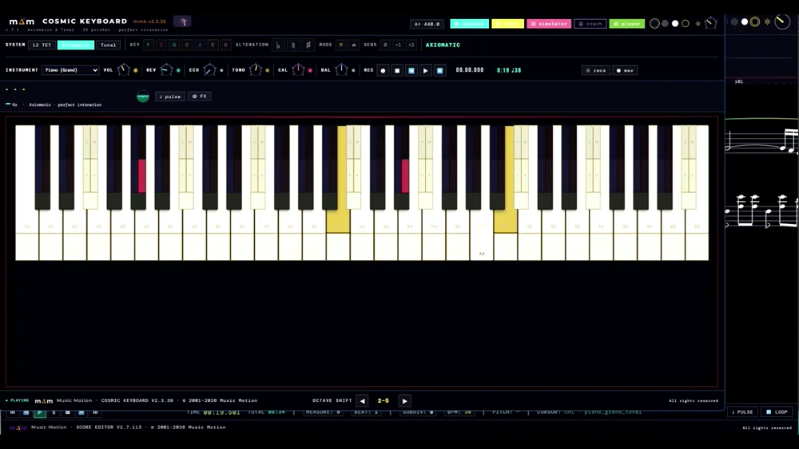
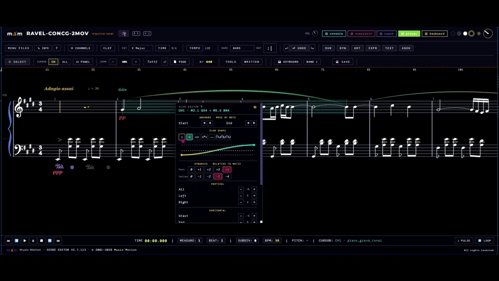
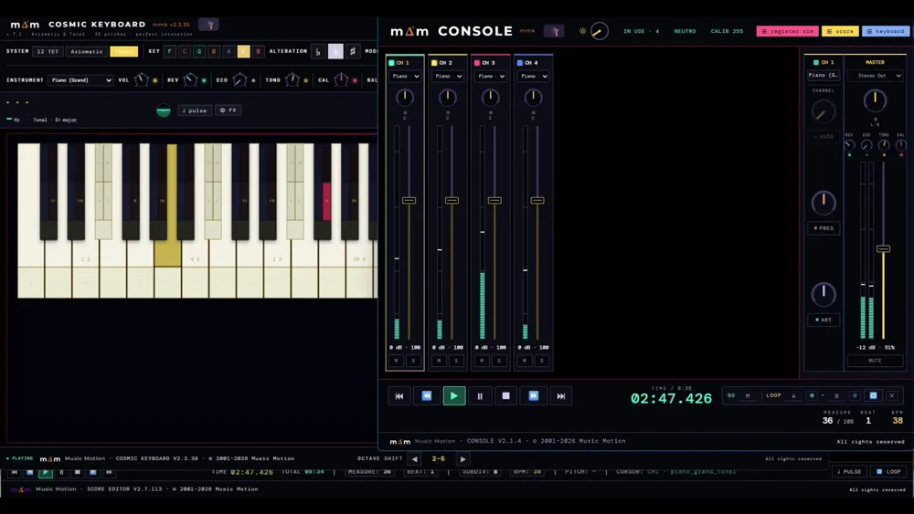
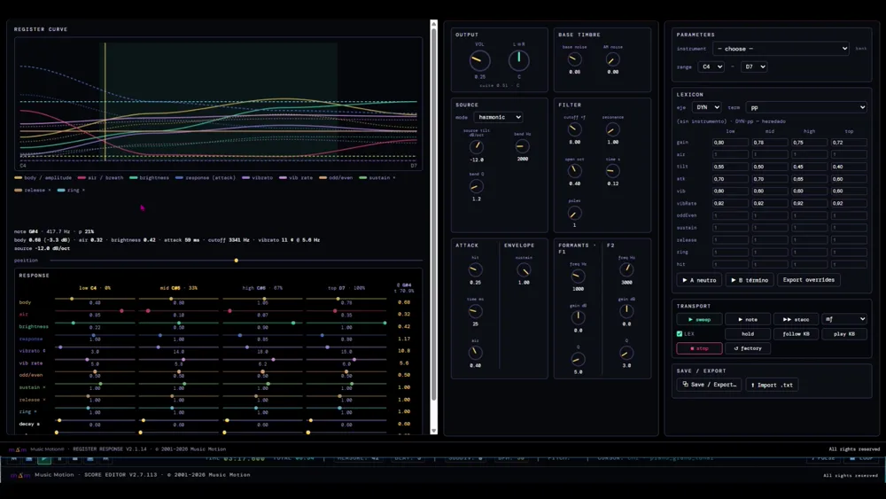
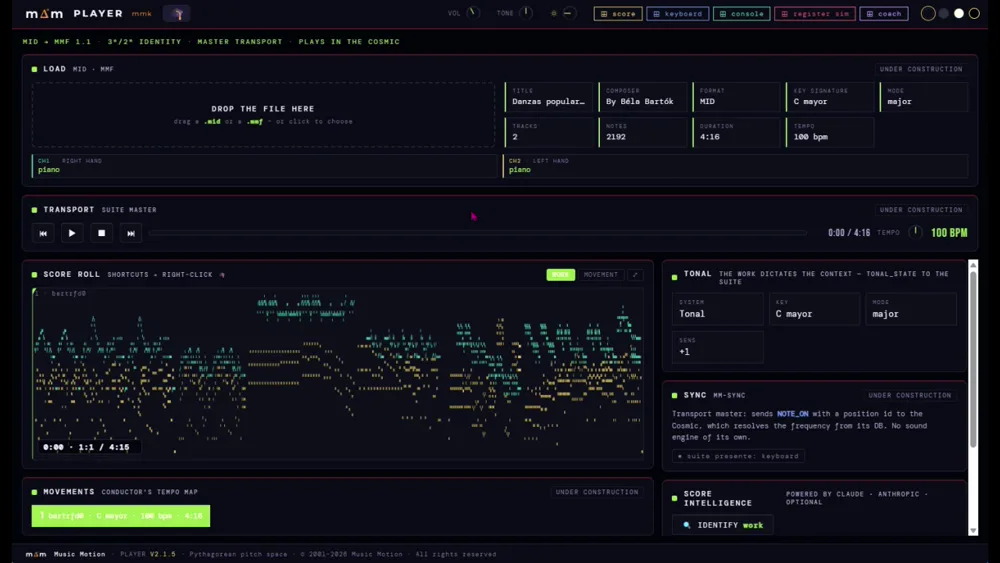
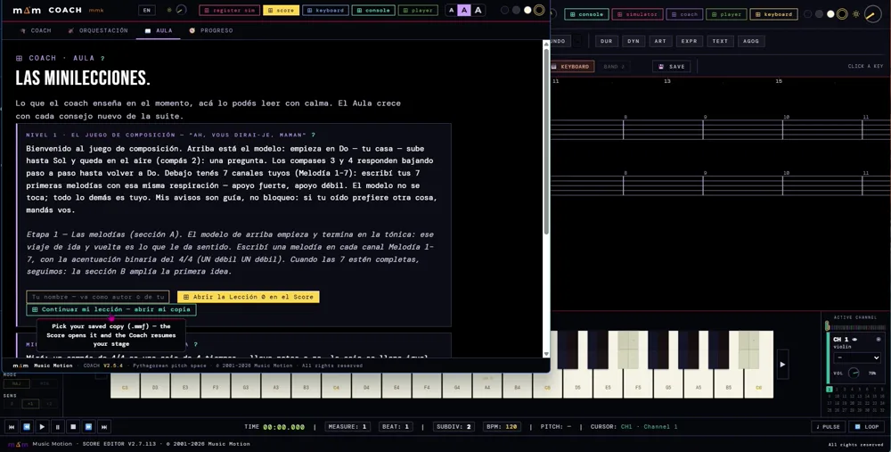

La ScoreSuite — seis aplicaciones que se escuchan entre sí. The ScoreSuite — six applications that listen to each other.
Funcionan en el navegador y comparten una misma base: la afinación pitagórica pura, de proporciones de 2 y 3, sin los redondeos del temperamento. Lo que se toca en una, las demás lo reciben en el acto: el teclado suena, la partitura lo escribe y la consola lo equilibra. They run in the browser and share one base: pure Pythagorean tuning, from ratios of 2 and 3, without equal temperament's rounding. What is played in one, the others receive at once: the keyboard sounds it, the score writes it and the console balances it.
mm-sync Las aplicaciones se conectan por un canal común: tocas en una y las demás responden. Corren en el navegador, desde cualquier lugar con internet — en compu, tablet o teléfono, sin instalar nada. The apps connect over one shared channel: play in one and the others respond. They run in the browser, from anywhere with an internet connection — on computer, tablet or phone, nothing to install.
Ventajas de la suiteWhat the suite gives you
Un instrumento, un editor de partituras y una consola de orquesta, sin instalar nada y sin más aparato que el ordenador que ya se tiene.An instrument, a score editor and an orchestra console — nothing to install, and no equipment beyond the computer you already have.
Desde cualquier lugar, en cualquier dispositivoAnywhere, on any device
Corre en el navegador desde musicmotionsuite.com: sin instalar y sin cuenta para empezar. En el aula, en casa o de viaje —compu, tablet o teléfono—, la suite está siempre disponible con solo tener conexión.It runs in the browser from musicmotionsuite.com: nothing to install, no account to begin. In the classroom, at home or travelling — computer, tablet or phone — the suite is always available with just a connection.
Un instrumento al alcance de todosAn instrument within everyone's reach
El teclado QWERTY del ordenador es el instrumento. En modo Tonal, cada grado ocupa siempre la misma posición, en cualquier tonalidad; en modo Axiomático, las posiciones son las del teclado estándar.The computer's QWERTY keyboard is the instrument. In Tonal mode each degree always sits in the same position, in any key; in Axiomatic mode the positions are those of the standard keyboard.
Se escucha lo que se escribeYou hear what you write
Las notas entran con el ratón o desde el Score Keyboard, directamente sobre el pentagrama activo, y la música editada suena en el acto: no hay que exportar nada para oírla.Notes go in with the mouse or from the Score Keyboard, straight onto the active staff, and the edited music sounds at once: nothing has to be exported to hear it.
32 canales de instrumentos32 instrument channels
Treinta y dos canales independientes para repartir la obra entre instrumentos distintos, del dúo a la plantilla completa, cada uno con su timbre y su registro.Thirty-two independent channels to spread the work across different instruments, from a duet to a full lineup, each with its own timbre and register.
Estudiar con la orquesta detrásPractise with the orchestra behind you
La Consola silencia o deja solo el canal que convenga: el instrumentista estudia su parte con el acompañamiento. El ensayo se graba en WAV y se envía a alumnos o profesores.The Console mutes or solos whichever channel is needed: the player studies their part with the accompaniment. The session is recorded to WAV and sent to students or teachers.
Cuatro formatos de salidaFour export formats
Cada obra sale en MMF —el formato nativo, con la identidad pitagórica exacta de cada nota—, XML, WAV y MID, según haga falta archivarla, abrirla en otro programa o compartirla como audio.Every work is exported as MMF — the native format, with each note's exact Pythagorean identity — XML, WAV and MID, whether it is to be archived, opened in another program or shared as audio.
El repertorio MIDI, editableYour MIDI library, editable
Un archivo .MID se convierte en MMF y se abre en el Score para editarlo. Lo que llega temperado pasa a tener, nota por nota, su altura pitagórica.A .MID file is converted to MMF and opened in the Score for editing. What arrives tempered takes on, note by note, its Pythagorean pitch.
Partitura en papel o en PDFSheet music on paper or as PDF
La partitura se imprime en papel o en PDF, y las partes por instrumento se extraen eligiendo los canales en el panel: salen maquetadas como la hoja.The score prints on paper or to PDF, and parts by instrument are extracted by picking the channels in the panel: they come out laid out as the sheet.
Ejercicios escritos por el profesorExercises written by the teacher
En escuelas de música y conservatorios, el profesor escribe sus propios ejercicios —de práctica instrumental o de armonía, contrapunto y composición— y el alumno los trabaja de forma interactiva, oyéndolos con la entonación más natural.In music schools and conservatoires, teachers write their own exercises — instrumental practice, or harmony, counterpoint and composition — and students work through them interactively, hearing them in the most natural intonation.
Una herramienta para cada funciónOne tool per role
Cada aplicación hace una cosa y la hace bien; juntas forman el instrumento.Each app does one thing well; together they form the instrument.

El motor de sonidoThe sound engine
El corazón: la única aplicación que produce sonido para toda la suite. Cada tecla está dividida — arriba la altura pitagórica pura, abajo una franja temperada (12-TET) para comparar.The heart: the only app that makes sound for the whole suite. Each key is split — pure Pythagorean pitch on top, an equal-tempered (12-TET) strip below to compare.
- Sistemas: Axiomático (pitagórico), 12-TET y Tonal (por grados)Systems: Axiomatic (Pythagorean), 12-TET and Tonal (by degree)
- ↑/↓ inflexionan la nota sostenida por apotome (tope ♯♯/♭♭)↑/↓ inflect the held note by an apotome (capped at ♯♯/♭♭)
- Fila HiFi: reverb · tono · calidez · balance L/RHiFi row: reverb · tone · warmth · L/R balance

La partituraThe score
Escribes música por canales. Su minikeyboard en modo TODAL permite tocar por grados de la tonalidad (en Fa mayor, el grado IV suena Si♭, de forma automática).You write music by channels. Its minikeyboard in TODAL mode lets you play by scale degrees (in F major, degree IV sounds B♭, automatically).
Imprime en papel o en PDF, y saca las partes por instrumento: se eligen los canales en el panel y el botón PRINT VIEW los abre maquetados como la hoja.It prints on paper or to PDF, and extracts parts by instrument: pick the channels in the panel and the PRINT VIEW button opens them laid out as the sheet.
- Resolución diatónica por armadura, etiquetas de grado en oroDiatonic resolution by key signature, gold degree labels
- Botón de modo: WRITE → TODAL PLAY → TODAL WRITEMode button: WRITE → TODAL PLAY → TODAL WRITE
- Eliges la tónica y la armadura se ajusta solaPick the tonic and the key signature sets itself

La mezclaThe mixer
El equilibrio entre los instrumentos de la partitura: volumen y silencio por canal, y el volumen maestro común a la suite.The balance between the score's instruments: per-channel volume and mute, plus the master volume shared across the suite.
- Faders por canal y masterPer-channel faders + master
- Transporte de reproducción (play/pausa/stop)Playback transport (play/pause/stop)

La respuesta del registroRegister response
Explora cómo responde cada registro del instrumento a lo largo del teclado.Explore how each register of the instrument responds across the keyboard.
- Banco de pruebas de timbre y registroTimbre & register test bench

El copistaThe Copyist
Carga MIDI y lo acuña como MMF — el formato nativo, con la identidad pitagórica exacta de cada nota. Transporte maestro de la suite; suena en el Cosmic.Loads MIDI and mints it as MMF — the native format, with each note's exact Pythagorean identity. The suite's master transport; it sounds through the Cosmic.
- MIDI → MMF organizado por la armadura del archivoMIDI → MMF organized by the file's key signature
- Score Intelligence: identifica la obra y sus tempos (con Claude)Score Intelligence: identifies the piece and its tempos (with Claude)

El asesorThe advisor
Escucha la suite en silencio y aparece cuando hace falta. Y ahora además enseña: conduce el juego de composición, donde empezás con una melodía modelo y terminás con una obra a cuatro voces escrita por vos, sin haber estudiado teoría.Listens to the suite silently and surfaces when needed. And now it also teaches: it leads the composition game, where you start from a model melody and end with a four-voice piece written by you, without having studied theory.
- 🎓 en las 4 apps: un clic lo despierta o lo duerme — nunca es una imposición🎓 in all 4 apps: one click wakes or sleeps it — never imposed
- Nivel 1 completo: seis etapas, de la melodía al cuarteto, y una ★ al terminarLevel 1 complete: six stages, from melody to quartet, and a ★ at the end
- Te avisa de los saltos difíciles y de las quintas paralelas — avisos, nunca bloqueosIt flags hard leaps and parallel fifths — warnings, never blocks
- Solfeo básico, técnico (vigila las apps) y estilos (Barroco, Clásico…)Basic solfège, technical (watches the apps) and styles (Baroque, Classical…)
- El pulso rítmico: latido visible y tap-tempoThe rhythmic pulse: visible beat + tap-tempo
De cero al primer sonidoFrom zero to first sound
Sirve la suite desde un mismo localhostServe the suite from one localhost
Las aplicaciones se comunican por mm-sync, que necesita un mismo origen. Abrir los archivos con doble clic (file://) aísla las ventanas y rompe la conexión.The apps talk over mm-sync, which needs a shared origin. Opening files by double-click (file://) isolates the windows and breaks the link.
Abre el trío de trabajoOpen the working trio
Cosmic Keyboard, Score y Console. Los botones de navegación de cada aplicación abren las otras y quedan encendidos mientras están abiertas.Cosmic Keyboard, Score and Console. Each app's nav buttons open the others and stay lit while they're open.
Encuentra tu «casa»Find your "home"
Toca el Keyboard hasta que una nota se sienta como el centro. Elige esa tónica: el Score escribe la armadura solo y queda listo para componer por grados.Play the Keyboard until one note feels like the center. Pick that tonic: the Score writes the key signature by itself and is ready to compose by degree.
Añade espacio y colorAdd space and color
En el Keyboard, la fila HiFi (reverb, tono, calidez) da aire y cuerpo a todo. Es solo salida: no toca la afinación.On the Keyboard, the HiFi row (reverb, tone, warmth) gives air and body to everything. It's output only — it never touches the tuning.
Cada tema, a tu nivelEach subject, at your level
Elige Para empezar (sin teoría) o Para músicos (con el detalle técnico). El contenido crece con la suite.Pick Getting started (no theory) or For musicians (with the technical detail). This grows with the suite.
El juego de composición — Nivel 1The composition game — Level 1
Un solo archivo que crece. Arriba queda una melodía modelo, con candado, y vos escribís las tuyas debajo. Cuando completás una etapa la obra crece sola con la parte siguiente: primero melodías, después la sección B, la parte C, el bajo, la voz interior y el tenor. Al final tenés una obra a cuatro voces que escribiste vos, y el Coach te firma con una ★. Se juega desde su ventana; el progreso viaja dentro del archivo, así que guardás y volvés cuando quieras. Ver el detalle →One file that grows. A model melody stays at the top, locked, and you write your own underneath. When you complete a stage the work grows into the next part by itself: melodies first, then section B, part C, the bass, the inner voice and the tenor. In the end you have a four-voice piece you wrote yourself, and the Coach signs you with a ★. It is played from its window; progress travels inside the file, so you save and come back whenever you like. See the detail →
forma A·B·C · contrapunto · SATB
Sobre Ah! vous dirai-je, maman — el tema que Mozart varió en la K.265. La partitura son 32 canales en 8 bloques de 4: melodía, 2ª, 3ª y bajo. Las etapas 1 a 3 construyen la forma A·B·C con reglas melódicas en aviso (tritono, séptima, recuperación de salto, tónica de inicio y final); la B queda sin cadencia a propósito. De la etapa 4 en adelante entra el motor vertical: paralelas, movimiento directo y cruce, primero contra el bajo en clave de Fa —al que no se le aplican las reglas de salto—, después con la 2ª voz y el tenor hasta cerrar SATB por bloque. Un nivel es un paquete de datos, no código: los Niveles 2 a 7 se fabrican con la misma receta.A·B·C form · counterpoint · SATB
Built on Ah! vous dirai-je, maman — the theme Mozart varied in K.265. The score is 32 channels in 8 blocks of 4: melody, 2nd, 3rd and bass. Stages 1 to 3 build the A·B·C form with melodic rules as warnings (tritone, seventh, leap recovery, tonic start and end); B is deliberately left without a cadence. From stage 4 the vertical engine comes in: parallels, direct motion and crossing, first against the bass in F clef — which the leap rules do not apply to — then with the 2nd voice and the tenor until each block closes as SATB. A level is a data package, not code: Levels 2 to 7 are built with the same recipe.
Las dos casas: la tónica y el pulsoThe two homes: tonic and pulse
En música hay dos lugares a los que siempre «vuelves». Uno es una nota: tu casa de la melodía. El otro es un latido regular: tu casa del tiempo. No hace falta saber cómo se llaman; los encuentras tocando, cuando algo se siente como el centro.In music there are two places you always "come home" to. One is a note — your melodic home. The other is a steady beat — your home in time. You don't need to know their names: you find them by playing, when something feels like the center.
tónica · pulso
La tónica es el grado I, centro del campo de alturas; el pulso es la unidad de tiempo. El Keyboard permite hallar la tónica de oído y la propaga a la suite (la armadura del Score se ajusta sola). El pulso se fija con tap-tempo y es la rejilla contra la que después se mide el ritmo.tonic · pulse
The tonic is scale degree I, the center of the pitch field; the pulse is the unit of time. The Keyboard lets you find the tonic by ear and propagates it to the suite (the Score's key signature follows). The pulse is set by tap-tempo and is the grid rhythm is later measured against.
El compás siempre sumaThe measure always adds up
Un compás de 4/4 es una caja de 4 tiempos: lleve notas o no, la caja se llena igual. Lo que no suena se escribe con silencios — cada figura tiene su silencio gemelo, que dura exactamente lo mismo. Si tu nota entra en el tiempo 2, el tiempo 1 lo ocupa un silencio: cuéntalo como si sonara (un…) y entra justo. En el Score lo ves en vivo: suelta una nota adelantada y los silencios aparecen solos, con el Coach contándote por qué.A 4/4 measure is a box of 4 beats: with or without notes, the box always fills. What doesn't sound is written as rests — every note value has a twin rest of exactly the same length. If your note enters on beat 2, beat 1 is taken by a rest: count it as if it sounded (one…) and you come in right on time. The Score shows it live: drop a note past the start and the rests appear by themselves, with the Coach telling you why.
compás · silencios
La suma de duraciones de un compás es invariante: notas y silencios completan siempre el valor de la métrica. Al insertar con drag una figura en una posición posterior al contenido, el Score rellena el hueco con silencios en orden decreciente (blanca → negra → corchea…), alineados al beat, dentro del mismo undo. El evento viaja por el bus (COACH · rest-fill) y el Coach genera el mensaje compacto y la minilección. Entradas a contratiempo y anacrusas internas se escriben así con la gramática correcta desde el primer gesto.measure · rests
A measure's duration sum is invariant: notes and rests always complete the meter's value. When you drag a value to a position past the existing content, the Score fills the gap with rests in decreasing order (half → quarter → eighth…), beat-aligned, inside the same undo. The event travels on the bus (COACH · rest-fill) and the Coach renders the compact message and the mini-lesson. Off-beat entries and internal pickups are written with correct grammar from the very first gesture.
Pitagórico frente a temperadoPythagorean vs tempered
El piano que conoces está «redondeado» para que todo encaje por igual. Music Motion usa la afinación natural, de proporciones simples, que suena más limpia. La diferencia es sutil en notas sueltas y se nota en los acordes. En cada tecla puedes comparar: arriba la natural, abajo la «redondeada» (la franja de color).The piano you know is "rounded off" so everything fits evenly. Music Motion uses natural tuning, from simple ratios, which sounds cleaner. The difference is subtle on single notes and shows in chords. On each key you can compare: natural on top, "rounded" below (the colored strip).
comma pitagórico
El temperamento igual reparte el comma pitagórico (3¹²/2¹⁹) en doce partes para cerrar el círculo de quintas. En pitagórico las quintas son justas (3:2) y la tercera mayor es ancha (81/64 = 407,8 ¢ frente a 400 ¢). Ancladas en el mismo La, las naturales se apartan del temperado entre −8 y +4 ¢; el contraste vive en las terceras y los acordes, no en las notas sueltas. La franja temperada (12-TET) de cada tecla es la capa de comparación.Pythagorean comma
Equal temperament spreads the Pythagorean comma (3¹²/2¹⁹) across twelve parts to close the circle of fifths. In Pythagorean the fifths are pure (3:2) and the major third is wide (81/64 = 407.8 ¢ vs 400 ¢). Anchored on the same A, the naturals deviate from tempered by −8 to +4 ¢; the contrast lives in thirds and chords, not single notes. The tempered (12-TET) strip on each key is the comparison layer.
Subir y bajar una nota, y su límiteRaising and lowering a note — and its limit
Mientras sostienes una nota, las flechas ↑/↓ la suben o la bajan un escalón (un «sostenido» o un «bemol»). Puedes hacerlo hasta dos veces; si insistes, el Coach te avisa de que has llegado al límite. La tecla iluminada se mueve para mostrarte en qué nota estás.While you hold a note, the ↑/↓ arrows raise or lower it one step (a "sharp" or a "flat"). You can do it up to twice; if you push further, the Coach tells you you've hit the limit. The lit key moves to show which note you're on.
apotome · ♯♯/♭♭
↑/↓ aplican un apotome (2187/2048 = 3⁷/2¹¹) sobre la nota sostenida, en vivo, sin reataque. El tope es absoluto en ♯♯ y ♭♭ (índices −2..+2): por ejemplo, desde Fa♯, un ↑ da Fa𝄪; el siguiente lo bloquea y el Coach muestra «2 alteraciones — límite». La iluminación sigue la inflexión (♮→♯→𝄪 / ♮→♭→𝄫). Todo en factores de 2 y 3, sin cents.apotome · ♯♯/♭♭
↑/↓ apply an apotome (2187/2048 = 3⁷/2¹¹) to the held note, live, without retrigger. The cap is absolute at ♯♯ and ♭♭ (indices −2..+2): e.g. from F♯, one ↑ gives F𝄪; the next is blocked and the Coach shows "2 alterations — limit". Illumination follows the inflection (♮→♯→𝄪 / ♮→♭→𝄫). All in factors of 2 and 3 — no cents.